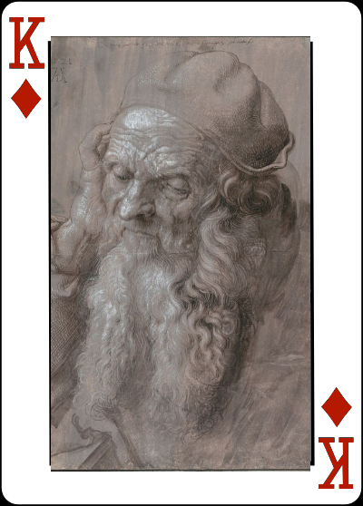

Classical Playing Cards


Mouseover to see the card backs
Cards are a fun way to pass the time, and while you're trying to draw to that inside straight, you might as well enjoy beautiful art as supplied by The Classical Sketchbook.
Choose from dozens of artistic poker deck designs featuring works by Michelangelo, del Sarto, Ingres, and Raphael. Each deck is made with finger-print resistant quality plastic that can be cleaned again and again to keep it fresh.
Every deck comes in a foil-stamped box accompanied by a booklet describing the artist and the artworks. We do supply missing cards upon request, so please contact us with special orders.